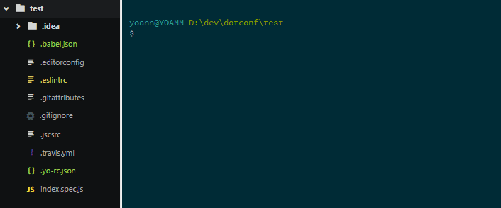

:ring: One config, to rule them all.

dotconf will archive all your .file|.directory into one single .conf.
It will extract them when needed (advised in npm postinstall).

Installation
# Locally in your project [advised]
npm i dotconf --save
# Or globally
npm i dotconf -gUsage
dotconf [OPTIONS] [ARGS]Options:
# Actions
-a, --archive Archive your files
-e, --extract Extract your files
# Options
-d, --destination [STRING] Destination of the archive
# Default is .file
-p, --pattern [STRING] Pattern to get file files
# Default is .*
-s, --safe [BOOL] Execute in safe mode
# Default is true
--safeDestination [STRING] Destination of the safe storage
# Default is .tempDotConf
-i, --ignore [ARRAY] What to ignore
# Default is .git*,node_modules/**,.file,.tempDotConf/**
# CLI related
-k, --no-color Omit color from output
--debug Show debug information
-v, --version Display the current version
-h, --help Display help and usage detailsBy default, options can be read in the package.json under dotconf object.
"dotconf": {
"destination": ".file",
"safeDestination": ".tempDotConf",
"safe": true,
"pattern": ".*",
"ignore": [
".git*",
"node_modules/**" ,
".file",
".tempDotConf/**"
]
}